5. Mechanic subsets and Set Ability Enabled
Goal: switch any of the hero's 11 moves off: in the editor for the whole game, or from a Blueprint while the game runs.
You need: Unreal Engine 5.3–5.8 with the plugin enabled (pictures: 5.7), Settings > Plugin Content ticked in the Content Browser (5.3–5.5: Show Plugin Content), and a level that uses the kit's hero, for example the demo map Course1_RunAndJump (Plugins > Proving Grounds: 3D Platformer Mechanics > Maps). Open that level first.
Part 1: choose the hero's moves in the editor
- In the Content Browser go to Plugins > Proving Grounds: 3D Platformer Mechanics > Blueprints > Core and double-click BP_Character. It is the hero the demo game mode spawns.
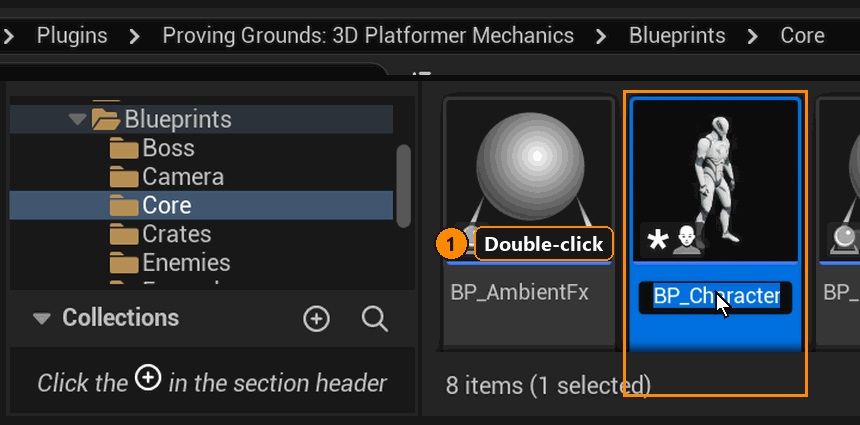
- Click Class Defaults in the Blueprint toolbar.
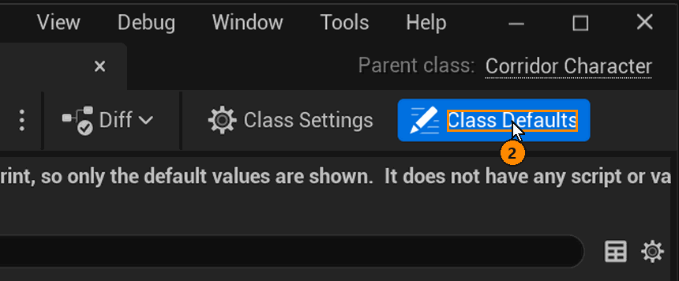
- Click the Details search box and type Abilities.
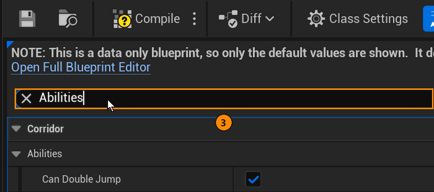
- Expand Corridor > Abilities with its arrow. These 11 boxes are the hero's switches, all ticked by default. A move works only while its box is ticked here and in the hero's 5. Abilities section (further down the same panel): unticking it in either place switches it off.
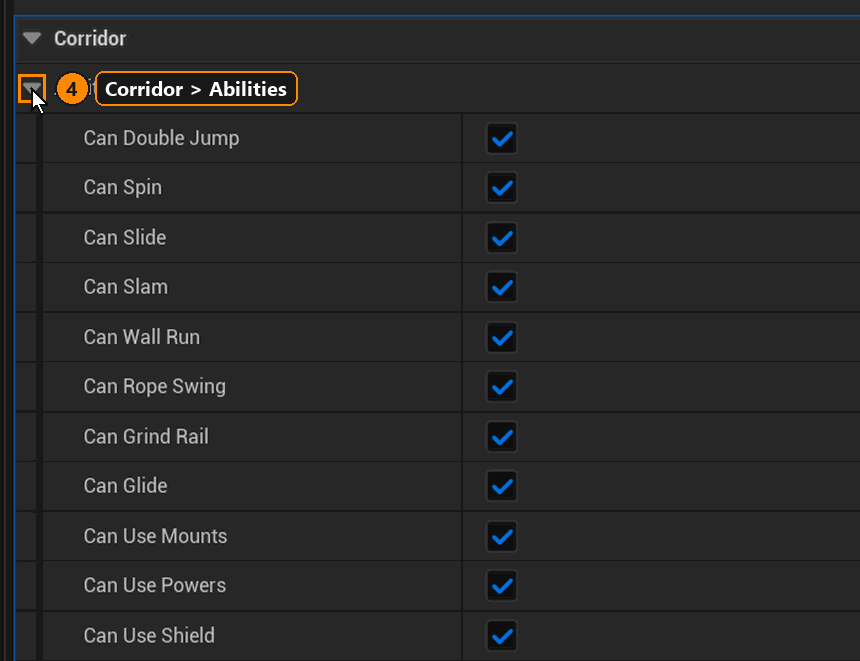
- Untick Can Double Jump.
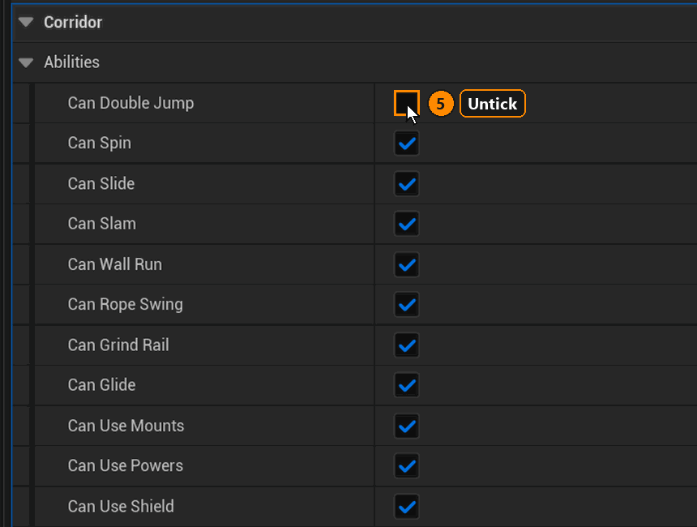
- Click Play in the level editor toolbar. Run, press Jump, then press Jump again in the air.
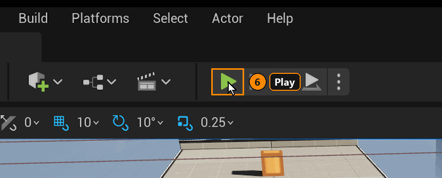
Result
Same input in both Play sessions (run, Jump, then Jump again 0.6 s later in the air), stopped at the same moment. With Can Double Jump ticked the second press lifts the hero to 3.1 m; unticked, the second press does nothing: one jump, top 2.4 m, and the hero is back on the floor.
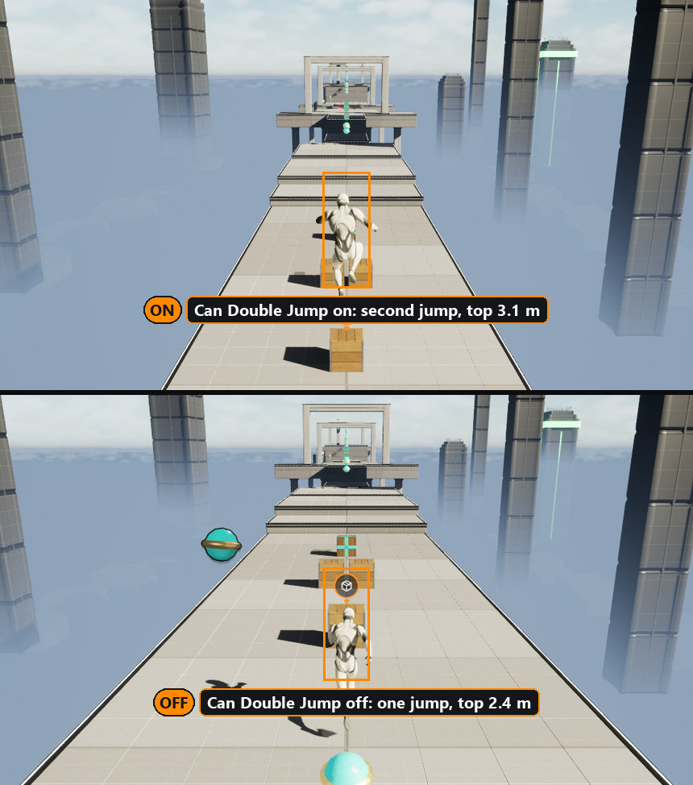
Ready-made subsets (the same boxes, from the recipes):
| You want | Leave ticked | Untick |
|---|---|---|
| Only wall run (Recipe 1) | Can Wall Run | the other 10 |
| Only power-ups (Recipe 2) | Can Use Powers, plus Can Glide for the Glide power | the rest |
Can Glide needs Can Use Powers on. Your own character reparented to Corridor Character shows the same Corridor > Abilities boxes in its Class Defaults; on a character that only has the Corridor Hero component, the seven boxes it honours are in 5. Abilities.
Part 2: switch a move off while the game runs
Tick Can Double Jump on again first (or click the reset arrow at the end of its row), so the change you see comes from the Blueprint.
- In the level editor toolbar click the Blueprints button (7a), then Open Level Blueprint (7b).
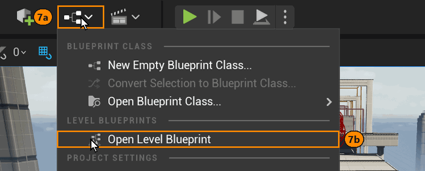
- Right-click an empty part of the graph, type Get Player Character and click it.
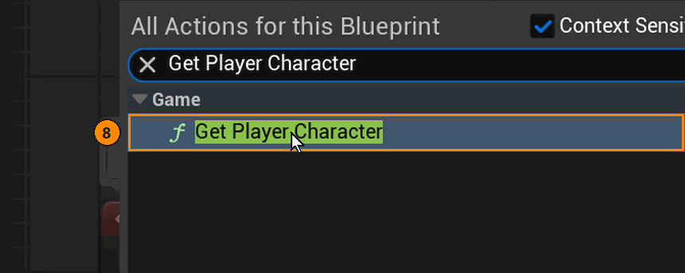
- Drag from its Return Value pin (9a), release in an empty spot, type Cast To CorridorCharacter and click it (9b).
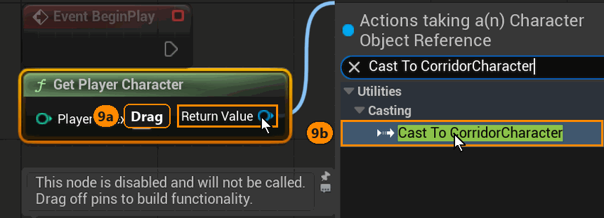
-
Drag from the white exec pin of Event BeginPlay (10a) to the exec input of the cast (10b).
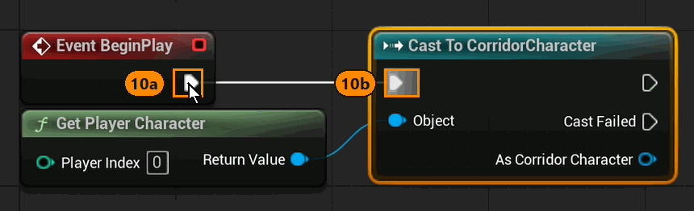
-
Drag from As Corridor Character (11a), type Set Ability Enabled and click the first entry (11b), the one without "(CorridorHero)". The editor wires the cast's exec output to the new node for you.
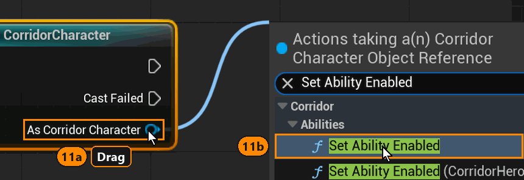
-
On the new node leave Ability on Double Jump (12a) and Enabled unticked (12b): unticked switches the move off.
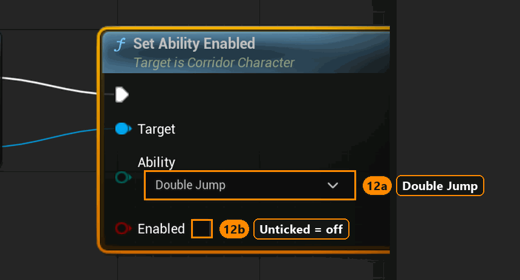
-
Click Compile.
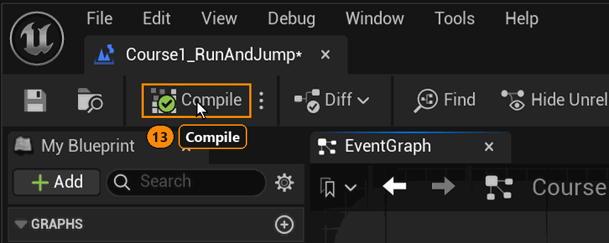
-
Click Play and try the double jump again (run, Jump, Jump again in the air).
Result
Can Double Jump is still ticked in BP_Character, but Set Ability Enabled switched it off when the level started: the second press does nothing (one jump, top 2.4 m).
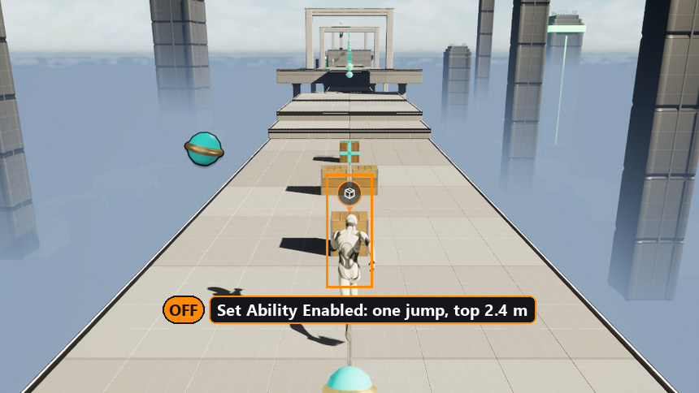
To switch a move back on, call Set Ability Enabled again with Enabled ticked, for example from a pickup (Recipe 3). Is Ability Enabled (Ability) tells you whether a move is on.
If it doesn't work - A move stays off after you ticked it again: its box must be ticked in both Corridor > Abilities and 5. Abilities (step 4). Set Ability Enabled sets both for you. - Can Glide does nothing: Can Use Powers must be on and the Glide power worn. - The double jump still works after Part 2: Event BeginPlay is not wired to the cast, or the Level Blueprint was not compiled (the toolbar shows a ? on Compile). - Your level's hero is your own character with only the Corridor Hero component: call Set Ability Enabled on that component instead (cast to your character, get the component).
See also: Abilities and Actions · Blueprint API